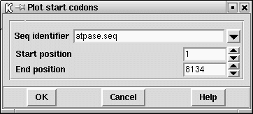

This function plots the positions of all start codons using the default genetic code in all 3 reading frames. The positions can be listed to the Output Window. The start codons are plotted beneath the centre of the plot (in contrast to the stop codons which are plotted above the centre). If any of the gene search methods are currently being displayed, the start codons will automatically be plotted on top of the corresponding frame, otherwise they will be plotted in three separate plots. These plots can be dragged and dropped in the usual manner.

![[picture]](spin_start_p,6in.png.html)
(Click for full size image)
Last generated on 25 April 2016.